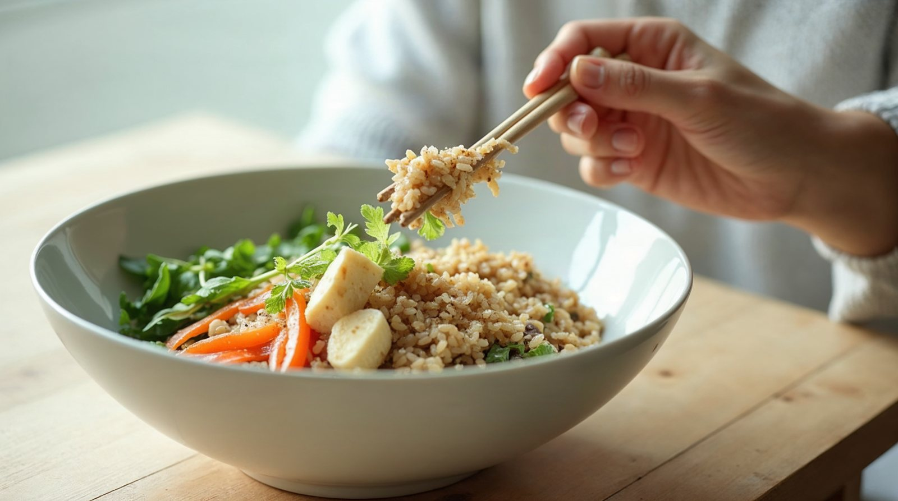
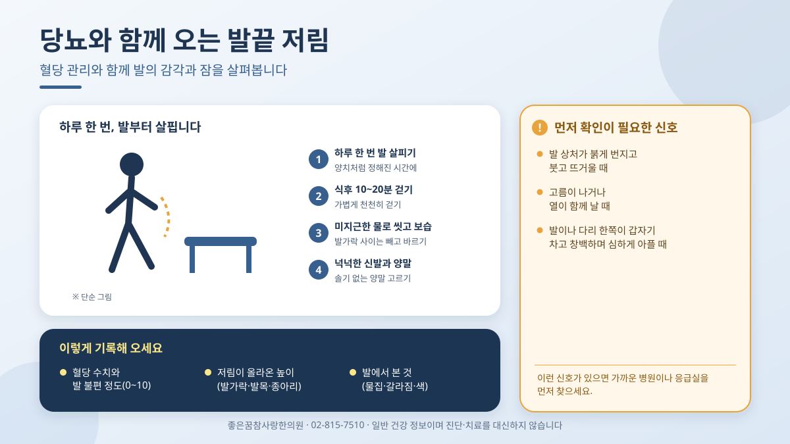

이종호 한의사 감수좋은꿈참사랑한의원 대표원장 (한의사 면허번호 19769)발행 2026-11-26 · 수정 2026-11-26
이 글의 차례
저녁에 양말을 벗는데 발바닥이 모래를 밟고 있는 것처럼 까슬까슬합니다. 이불 속에 발을 넣으면 발끝이 화끈거리고 따끔거려 이불을 걷어차게 됩니다. 그런데 이상하게도 욕실 바닥의 차가운 물기는 잘 느껴지지 않습니다.
당뇨약을 드신 지 여러 해가 된 분들이 진료실에서 이런 이야기를 자주 하십니다. "발이 내 발 같지 않아요." "양말을 신은 것처럼 둔해요." "밤만 되면 발이 타는 것 같아요."
이렇게 당뇨가 있는 분이 양쪽 발끝부터 저리고 화끈거리거나 감각이 둔해진다면 당뇨 말초신경병증을 떠올려 봅니다. 혈당이 오랫동안 높게 이어지면 팔다리 끝으로 가는 가느다란 신경과 그 신경에 영양을 주는 작은 혈관이 조금씩 다칠 수 있습니다.
혈당 관리와 진단, 약 처방은 내과와 신경과에서 받으시고, 한의원에서는 그 곁에서 잠과 발의 냉기, 통증으로 지친 마음, 식사와 몸의 리듬을 함께 살핍니다.
발의 불편함은 밤에 더 크게 느껴집니다. 낮에는 이런저런 일에 묻혀 있다가 조용히 누우면 발끝의 화끈거림과 따끔거림이 한꺼번에 올라옵니다. 그렇게 잠을 설친 밤이 쌓이면 몸도 마음도 함께 지칩니다.
왜 발끝부터 저려 올까요
우리 몸의 신경 가운데 가장 긴 신경은 허리에서 시작해 발끝까지 내려갑니다. 신경이 길수록 혈당의 영향을 오래, 많이 받기 쉬워서 당뇨 말초신경병증은 대개 발끝에서 먼저 시작됩니다.
그래서 처음에는 양쪽 발가락 끝이 저리다가, 시간이 지나면 발바닥과 발등, 발목 위로 조금씩 올라오는 흐름을 보입니다. 다리가 어느 정도 올라오면 손끝에서도 비슷한 느낌이 시작되기도 합니다. 양말과 장갑을 낀 자리처럼 퍼진다고 해서 '양말·장갑 모양'이라고 부르기도 합니다.
증상은 크게 두 가지로 나타납니다. 하나는 저림, 화끈거림, 찌릿함, 바늘로 찌르는 듯한 통증처럼 '없던 느낌이 생기는' 증상이고, 다른 하나는 감각이 둔해지고 무뎌지는 '있던 느낌이 사라지는' 증상입니다.
뒤쪽이 더 조심해야 하는 변화입니다. 감각이 둔해지면 신발 속 작은 돌이나 물집, 뜨거운 물에 데인 것을 모르고 지나칠 수 있습니다. 당뇨가 있으면 상처가 잘 아물지 않을 수 있어, 작은 상처가 크게 번지기 전에 발견하는 것이 중요합니다.
한의학에서는 이런 손발의 저림을 마목(麻木)이라 부르며 살펴 왔습니다. 기운과 혈이 손발 끝까지 잘 닿지 못하는 상태, 몸이 차서 흐름이 더딘 상태, 열이 쌓여 화끈거리는 상태를 나누어 보며 몸 전체의 흐름을 읽으려 합니다.
다른 저림과는 어떻게 다를까요
발이 저리다고 모두 당뇨 때문은 아닙니다. 당뇨가 있는 분도 다른 원인이 겹칠 수 있어 나누어 살핍니다.
허리에서 내려오는 저림
허리 디스크나 척추관 협착증에서 오는 저림은 대개 한쪽 엉덩이에서 다리 뒤나 옆을 따라 선처럼 내려가고, 걷거나 허리를 젖힐 때 심해지는 경우가 많습니다. 당뇨 말초신경병증은 양쪽 발끝부터 비슷하게 시작된다는 점이 다릅니다.
발목 안쪽 신경이 눌리는 경우
발목 안쪽 복사뼈 아래를 지나는 신경이 눌리면 발바닥 쪽이 저리고 화끈거릴 수 있습니다. 한쪽에만 있거나 오래 서 있은 뒤 심해진다면 이런 경우도 함께 살핍니다.
혈관이 좁아진 경우
걸을 때 종아리가 조이듯 아파 멈춰 쉬어야 하고, 쉬면 가라앉는다면 다리 혈관이 좁아진 경우를 살핍니다. 당뇨가 있으면 혈관 문제도 함께 생길 수 있어, 발이 유난히 차고 창백하거나 발등 맥박이 약하다면 내과에서 확인해 보시길 권합니다.
비타민 부족이나 다른 원인
당뇨약 가운데 일부를 오래 드시면 비타민 B12가 부족해질 수 있다고 알려져 있고, 이 역시 손발 저림의 원인이 됩니다. 갑상선, 신장 기능, 술도 저림과 관련이 있어 혈액 검사로 함께 확인하는 경우가 많습니다.
매일 발을 살피는 습관
당뇨가 있는 분께 저는 발을 얼굴처럼 매일 들여다보시라고 말씀드립니다. 거울로 얼굴을 보듯, 하루 한 번 발을 보는 시간을 정해 두면 작은 변화를 일찍 알아챌 수 있습니다.
- 씻은 뒤 발가락 사이까지 물기를 잘 닦고 살펴보기
- 발바닥은 손거울을 쓰거나 가족에게 봐 달라고 부탁하기
- 물집, 갈라짐, 굳은살, 색이 변한 곳, 붓거나 뜨거운 곳이 있는지 보기
- 발톱은 일자로 자르고 너무 짧게 깎지 않기
- 신발을 신기 전 안에 이물질이 없는지 손으로 한 번 훑어보기
- 맨발로 다니지 않고, 발에 맞는 편한 신발 신기
목욕물 온도는 발이 아닌 손이나 팔꿈치로 먼저 확인하세요. 발의 감각이 둔해지면 뜨거운 물을 미지근하게 느낄 수 있습니다. 같은 이유로 찜질팩, 전기장판, 난로를 발에 바로 대는 것도 조심해야 합니다.
굳은살이나 티눈을 집에서 칼이나 가위로 깎아 내는 것은 피해 주세요. 작은 상처가 생기면 아물기 어려울 수 있습니다. 발에 생긴 상처가 며칠이 지나도 아물지 않거나 붉게 번진다면 다니시는 내과에 알리고 상처를 보여 주시길 권합니다.

혈당 관리가 바탕입니다
말초신경병증을 살필 때 가장 바탕이 되는 것은 혈당 관리입니다. 혈당이 들쭉날쭉하면 신경이 받는 부담도 커진다고 봅니다. 내과에서 정한 목표에 맞추어 약을 꾸준히 드시고, 정기 검사를 챙기시길 권합니다.
식사는 거르지 않되 한 끼에 몰아 드시지 않도록 나누어 드세요. 채소와 단백질 반찬을 먼저 드시고 밥은 나중에 드시는 식사 순서도 내과에서 자주 권하는 방법입니다. 단 음료와 과자는 손 닿지 않는 곳에 두는 것부터 시작해 보세요.
혈압과 콜레스테롤, 담배와 술도 신경과 혈관에 함께 영향을 줍니다. 담배를 피우신다면 줄이고 끊는 일을 내과와 상의해 보시고, 술은 횟수와 양을 줄여 가 보세요.
손끝까지 저려 올 때
발의 저림이 무릎 가까이 올라올 무렵 손끝에서도 비슷한 느낌이 시작되었다는 분이 있습니다. 단추를 채우거나 동전을 집는 일이 둔해지고, 손에 든 물건을 놓치는 일이 늘었다면 그 변화도 진료 때 함께 말씀해 주세요.
다만 한쪽 손만 저리거나 밤에 손이 저려 깨고 흔들면 풀린다면 손목에서 신경이 눌리는 경우를 따로 살피기도 합니다. 당뇨가 있는 분은 이런 손목 신경 눌림도 함께 생기기 쉽다고 알려져 있어, 저림의 모양을 나누어 보는 것이 도움이 됩니다.
먼저 이렇게 여쭙니다
처음 오시면 저는 대략 이런 순서로 여쭙습니다. 기억나는 것부터 말씀해 주셔도 괜찮습니다.
- 당뇨를 진단받은 지 얼마나 되었나요? 최근 당화혈색소는 어땠나요?
- 저림은 어디서 시작해 어디까지 올라왔나요? 양쪽이 비슷한가요?
- 저림, 화끈거림, 찌릿함, 감각 둔함 가운데 어떤 느낌이 가장 큰가요?
- 낮과 밤 가운데 언제 더 불편하신가요? 잠은 얼마나 설치시나요?
- 발에 상처나 물집이 생겼는데 늦게 알아챈 적이 있나요?
- 지금 드시는 약(당뇨약, 혈압약, 신경통 약, 영양제)은 무엇인가요?
- 걸을 때 휘청이거나 계단에서 발을 헛디딘 적이 있나요?
발만 여쭙지 않고 그 저림이 하루를 어떻게 바꿔 놓았는지도 함께 여쭙습니다. 걷는 양이 줄었는지, 밤에 몇 번 깨는지, 마음이 많이 가라앉았는지가 다음에 무엇부터 챙길지를 정해 줍니다.
일상에서 먼저 해 볼 수 있는 것
아래에서 지금 할 수 있는 것 하나부터 골라 보세요.
- 하루 한 번 발 살피기를 양치처럼 정해진 시간에 하기
- 식후에 10분에서 20분 정도 가볍게 걷기
- 잠들기 전 미지근한 물로 발을 씻고 보습제 바르기(발가락 사이는 빼고)
- 발에 맞는 넉넉한 신발과 솔기가 없는 양말 고르기
- 밤에 발이 화끈거리면 이불을 얇게 하거나 발만 살짝 내놓아 보기
- 혈당 수치와 발 느낌을 같은 수첩에 함께 적어 두기
감각이 둔해지면 균형을 잡기 어려워 넘어지기 쉽습니다. 밤에 화장실 가는 길에 작은 불을 켜 두고, 욕실에는 미끄럼 방지 매트를 깔아 두세요. 계단에서는 손잡이를 잡는 습관을 들이시길 권합니다.
걷기가 부담스럽다면 의자에 앉아 발목을 위아래로 젖혔다 펴고, 발가락을 오므렸다 펴는 운동부터 시작해도 좋습니다. 발의 근육을 움직여 주면 발이 덜 굳고 걸음도 조금 더 안정됩니다.
한의원에서 함께 살필 수 있는 경우
- 내과 혈당 관리와 신경과 진료를 이어 가면서 잠과 발의 냉기를 함께 살피고 싶은 경우
- 밤마다 발끝이 화끈거리거나 저려 잠을 설치는 경우
- 발과 다리가 늘 차고 무거우며 몸이 쉽게 지치는 경우
- 통증 때문에 걷는 양이 줄고 마음이 많이 가라앉은 경우
좋은꿈참사랑한의원에 처음 오시면 내과 진료 여부와 최근 혈당·당화혈색소, 드시는 약을 먼저 확인합니다. 그다음 양손을 올려 달라고 말씀드리고 맥을 짚으며 잠과 소화, 갈증, 땀, 대소변, 손발의 온도를 여쭙습니다. 발도 함께 살펴봅니다.
진찰 뒤에는 상태에 따라 다리와 발의 자리를 살피며 침을 상의할 수 있습니다. 당뇨가 있는 분은 피부가 약하고 상처가 잘 아물지 않을 수 있어 소독과 자리 선택을 더 꼼꼼히 하고, 뜸이나 찜질처럼 열을 쓰는 방법은 감각을 확인한 뒤 신중하게 정합니다.
한약은 진찰 뒤 필요하다고 판단될 때 상의합니다. 당뇨약과 다른 약을 드시고 있다면 이름을 모두 알려 주세요. 혈당에 영향을 줄 수 있는지까지 함께 살펴 신중하게 확인하고 정합니다. 처방받은 약은 처방한 의사와 상의 없이 줄이거나 끊지 않습니다.
다시 오시면 지난번 이후 밤에 깬 횟수와 발의 느낌, 혈당 기록이 어땠는지부터 이어서 여쭙습니다.
이렇게 기록해 오시면 상담이 쉬워집니다
발의 느낌은 하루에도 오르내려 기억만으로는 흐름을 잡기 어렵습니다. 2주만 적어 보세요.
- 공복 혈당과 식후 혈당(재는 분이라면), 최근 당화혈색소
- 발의 불편함 정도(0부터 10까지)와 가장 심했던 시간대
- 저림이 올라온 높이(발가락, 발바닥, 발목, 종아리)
- 잠든 시각과 깬 시각, 밤에 깬 횟수
- 그날 걸은 시간과 식사 내용
- 발 살피기에서 발견한 것(물집, 갈라짐, 색 변화)
휴대폰 메모에 짧게 적어도 충분합니다. 빠진 날이 있어도 괜찮습니다. 기억나는 줄부터 같이 펼쳐 보겠습니다.
밤의 화끈거림과 잠
말초신경병증의 통증은 낮보다 밤에 더 크게 느껴지는 경우가 많습니다. 낮에는 걷고 일하며 다른 감각이 섞여 있다가, 조용히 누우면 발끝의 신호만 또렷하게 남기 때문입니다.
이불의 무게만으로도 발등이 따끔거린다는 분이 있습니다. 이럴 때는 발치에 베개를 하나 받쳐 이불이 발에 직접 닿지 않게 하거나, 얇은 이불로 바꿔 보세요. 작은 요령이지만 잠드는 데 도움이 되었다는 말씀을 자주 듣습니다.
잠을 설치면 다음 날 혈당도 흔들리기 쉽고, 피곤한 몸은 통증을 더 크게 느낍니다. 그래서 잠자리에 드는 시각을 일정하게 맞추고, 저녁에는 카페인과 술을 줄이시길 권합니다. 통증 때문에 잠들기 어려운 날이 많다면 그 이야기도 내과나 신경과에 꼭 전해 주세요.
가족이 함께 알아 두면 좋은 것
발바닥이나 발가락 사이는 혼자 살피기 어려운 자리입니다. 가족이 일주일에 몇 번이라도 발을 함께 봐 주면 작은 상처를 놓치지 않는 데 큰 도움이 됩니다.
어르신이라면 발톱 깎기도 가족이 도와드리는 편이 안전합니다. 신발을 살 때 함께 가서 발 볼과 길이가 넉넉한지 확인해 드리는 것도 좋습니다. 식탁에서 단 음식과 짠 음식을 함께 줄여 가는 것도 곁에서 할 수 있는 일입니다.
이런 증상은 먼저 확인이 필요합니다
- 발의 상처가 붉게 번지고 붓고 뜨거우며 고름이나 열이 나는 경우
- 발이나 다리 한쪽이 갑자기 차갑고 창백해지며 심하게 아픈 경우
이런 신호가 있으면 한의원보다 가까운 병원이나 응급실을 먼저 찾으세요.
오래 당뇨를 관리해 오신 것만으로도 매일의 수고가 컸을 겁니다. 발의 저림까지 더해지면 지치는 마음이 드는 것이 당연합니다. 서두르지 않고, 혈당 관리는 내과와 함께, 잠과 발의 불편함은 이곳에서 함께 살펴보겠습니다. 다음에 오시면 지난 2주 동안 발과 잠이 어땠는지부터 여쭙겠습니다.
함께 읽으면 좋은 글
- 손발이 저리고 차가울 때는 어떤 점을 먼저 확인하나요?
- 밤에 발이 저리고 따끔거릴 때는 어떻게 살피나요?
- 당뇨 전단계·공복혈당장애라는 말을 들었을 때 무엇부터 살피나요?
- 혈압약이나 당뇨약을 먹고 있는데 한약을 함께 먹어도 되는지 어떻게 확인하나요?

여쭙는 것
- 당뇨를 진단받은 지 얼마나 되었나요? 최근 당화혈색소는 어땠나요?
- 저림은 어디서 시작해 어디까지 올라왔나요? 양쪽이 비슷한가요?
- 저림, 화끈거림, 찌릿함, 감각 둔함 가운데 어떤 느낌이 가장 큰가요?
생활에서 해 볼 것
- 하루 한 번 발 살피기를 양치처럼 정해진 시간에 하기
- 식후에 10분에서 20분 정도 가볍게 걷기
- 잠들기 전 미지근한 물로 발을 씻고 보습제 바르기(발가락 사이는 빼고)
한의원에서 함께 살필 것
- 내과 혈당 관리와 신경과 진료를 이어 가면서 잠과 발의 냉기를 함께 살피고 싶은 경우
- 밤마다 발끝이 화끈거리거나 저려 잠을 설치는 경우
- 발과 다리가 늘 차고 무거우며 몸이 쉽게 지치는 경우
먼저 확인이 필요한 신호
- 발의 상처가 붉게 번지고 붓고 뜨거우며 고름이나 열이 나는 경우
- 발이나 다리 한쪽이 갑자기 차갑고 창백해지며 심하게 아픈 경우
한눈에 보는 표
| 구분 | 핵심 |
|---|---|
| 여쭙는 것 | 당뇨를 진단받은 지 얼마나 되었나요? 최근 당화혈색소는 어땠나요? 저림은 어디서 시작해 어디까지 올라왔나요? 양쪽이 비슷한가요? |
| 생활에서 해 볼 것 | 하루 한 번 발 살피기를 양치처럼 정해진 시간에 하기 식후에 10분에서 20분 정도 가볍게 걷기 |
| 한의원에서 함께 살필 것 | 내과 혈당 관리와 신경과 진료를 이어 가면서 잠과 발의 냉기를 함께 살피고 싶은 경우 밤마다 발끝이 화끈거리거나 저려 잠을 설치는 경우 |
| 먼저 확인이 필요한 신호 | 발의 상처가 붉게 번지고 붓고 뜨거우며 고름이나 열이 나는 경우 발이나 다리 한쪽이 갑자기 차갑고 창백해지며 심하게 아픈 경우 |
자주 묻는 질문
당뇨가 있으면 발 저림은 모두 말초신경병증인가요?
그렇지 않습니다. 허리에서 내려오는 저림, 발목 신경이 눌리는 경우, 혈관이 좁아진 경우, 비타민 부족 등이 함께 있을 수 있습니다. 내과와 신경과 검사로 원인을 나누어 확인하시길 권합니다.
발이 화끈거릴 때 찜질을 해도 되나요?
감각이 둔해진 발은 뜨거움을 잘 느끼지 못해 데일 수 있습니다. 찜질팩이나 전기장판을 발에 바로 대는 것은 피하시고, 미지근한 물로 씻는 정도가 안전합니다.
당뇨약을 먹고 있는데 한약을 함께 먹어도 되나요?
드시는 약을 모두 알려 주시면 혈당에 영향을 줄 수 있는지까지 확인한 뒤 진찰을 거쳐 정합니다. 당뇨약은 처방한 의사와 상의 없이 줄이거나 끊지 않습니다.
당뇨가 있어도 침을 맞을 수 있나요?
진찰 뒤 피부 상태와 감각을 확인하고 정합니다. 상처가 잘 아물지 않을 수 있어 소독과 자리 선택을 더 꼼꼼히 하고, 발에 상처가 있다면 그 자리는 피합니다.
저림이 덜해지면 발 살피기를 그만해도 되나요?
저림이 덜하게 느껴져도 감각이 둔해진 상태일 수 있습니다. 하루 한 번 발 살피기는 습관으로 계속 이어 가시길 권합니다.
좋은꿈참사랑한의원은 재진 때 지난번 이야기부터 이어서 여쭙니다. 진료시간과 예약은 오시는 길에서 확인하세요.
어디서 상담받을 수 있나요?
좋은꿈참사랑한의원은 서울 동작구 만양로2길 2 신성빌딩 3층·5층(서울 동작구 상도동, 7호선 상도역 3번 출구 근처)에 있습니다. 한의사 3명(이종호 대표원장, 조영기 수석진료원장, 정원영 진료원장)이 진료합니다. 진료시간은 평일 09:30~20:00(점심 13:00~14:00), 토·일·공휴일 09:30~15:00이며, 방문 전 전화로 확인을 권합니다. 예약은 네이버 예약, 카카오톡 상담, 전화 02-815-7510로 받습니다.
이 글은 일반적인 건강 정보이며 개인의 진단이나 치료를 대신하지 않습니다. 증상이 있거나 복용 중인 약이 있다면 진료를 통해 확인하세요. 치료 효과는 개인마다 다를 수 있습니다.
작성 기준: 일반적으로 알려져 있는 건강 정보를 참고해 정리했습니다(대표원장 감수). 증상 기록은 1~2주 동안 하루 1회, 비슷한 시간에 적어 오시면 지난 상태와 비교하기 쉽습니다.